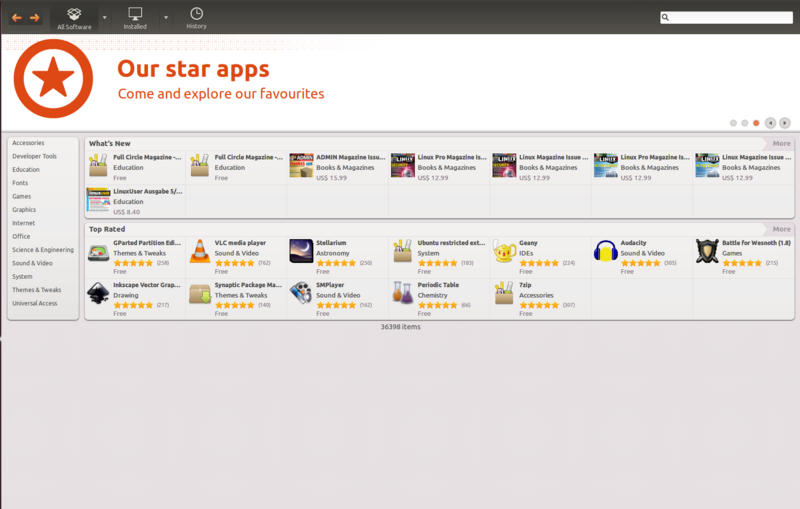
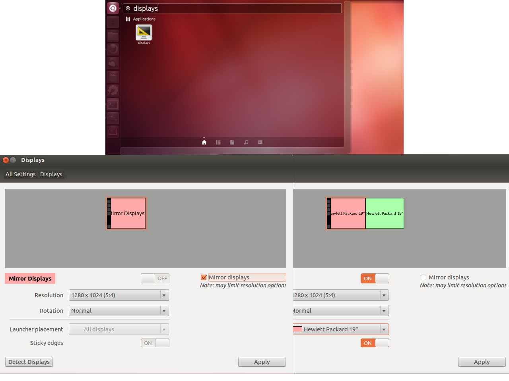
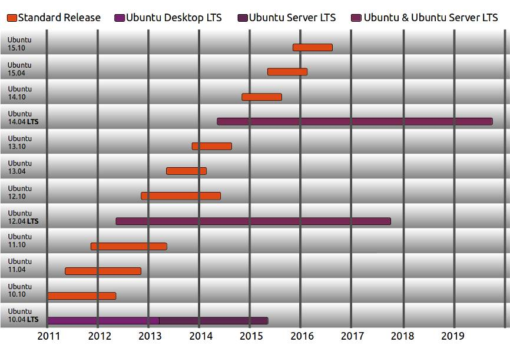

Puppet
Opensource Automation Software
Presentation by Kristian Botnen
A brief history
- ssh looping
- closed source, high cost software from a big vendor
- define desired state for your infrastructure
- configuration is code which accomodate versioncontrol
- Open Source, Community
What is puppet?
ruby based
Why Ubuntu?
softwarecenter accommodate selfservice on software

more, Why Ubuntu?
polkit accommodate selfservice (auth-self) on settings

even more, Why Ubuntu?
long-term-support version available

last one, Why Ubuntu?
it is considered one of the more user-friendly distros available
Macosx brief introduction
- not well-suited for mass deployment
- vendor driven upgradepath, yearly releases
- comes with os preinstalled
Automation is the key
- manual work is now automated, which saves time
- standardized config management, hopefully less error prone
- configuration is under versioncontroll, allows faster rollback if needed
Shared infrastructure
- Linux and Mac clients deploys from the same infrastructure
- Linux and Mac clients use the same configuration code
More about our toolbox later today
- A brief introduction on puppet, an opensource configmanagement tool
- A brief introduction on the foreman, an opensource node classifier
- A brief introduction on mcollective, an opensource orchestration tool